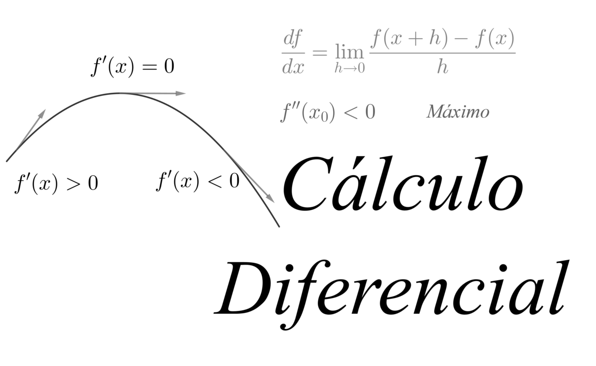

El calculo diferencial es una rama de la matematica que permite resolver diversos problemas donde el cambio de las variables se puede modelar
en un continuo numerico para determinar, a partir de ello, la variacion de estos elementos en un instante o intervalo especifico.
Al aplicarlo, es posible determinar el momento en que se da una tendencia al alza o a la baja del mercado a partir de los datos del indice bursatil, determinar la velocidad maxima que un vehiculo puede alcanzar en una carretera,
el comportamiento que puede mostrar a largo plazo la concentracion de una mezcla o predecir el numero de horas-hombre necesarias para un nivel de produccion industrial; los anteriores son ejemplos de la amplia variedad de problemas que pueden resolverse gracias a esta disciplina.
E ESCOGIDO VARIOS COLORES NO SOLO UNO EN PARTCULAR
EN ESTA SECCION E CONSIDERADO EL COLOR AZUL ARRIBA Y DEGRADADO
AL COLOR ROSA, E INTENTADO USAR COLORES OBSCUROS, JUNTO A LOS CLAROS
NECESIDADES:
LO UNICO QUE NECESITAS ES TENER CONOCIMIENTO BASE DE 2DO SEMTRESTRE A 3ER
SEMESTRE DE PREPARATORIA, UNICAMENTE USAMOS LA PAGINA WEB, EL USUARIO PUEDE UTILIZAR
LA MISMA COMPUTADORA PARA REALIZAR EJEMPLOS, Y ANOTAR APUNTES, OTRA MANERA SERIA
UTILIZAR UNA LIBRETA Y PLUMA, DE IGUAL MANERA CON APUNTES Y EJEMPLOS.